Nuestro Ámsterdam

Nuestros puntos
Restaurantes
Puntos de interés
Rooftops
Coffeeshops
Taxis
Mercadillos
Metro y tranvía
Plano esquemático: agua, calles y barrios aproximados. Toca un punto y usa «Abrir en Google Maps» para llegar.
Ver aeropuerto